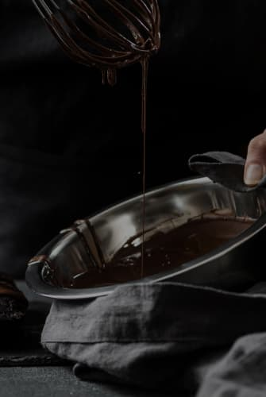

<section class="about-project" id="how_its_made">
  <div class="container about-project-section">
    <h2 class="about-project-title">
      HOW IT&#39;S <span class="about-project-title-item">MADE?</span>
    </h2>
    <div class="about-project-container">
      <div class="about-project-container-video">
        <picture>
          <source
            srcset="
              ./images/how_its_made/video-cover.jpg    1x,
              ./images/how_its_made/video-cover@2x.jpg 2x
            "
            media="(min-width: 1200px)"
          />
          <source
            srcset="
              ./images/how_its_made/video-cover-tablet.jpg    1x,
              ./images/how_its_made/video-cover-tablet@2x.jpg 2x
            "
            media="(min-width: 768px)"
          />
          
        </picture>
        <a
          href="https://www.youtube.com/watch?v=P_JuQCiKWUc"
          target="_blank"
          class="about-project-video-link"
        >
          <svg class="about-project-icon">
            <use href="./images/icons.svg#icon-play"></use>
          </svg>
        </a>
      </div>
      <div class="container-about-project-subtitle">
        <p class="about-project-subtitle">
          Try our chocolates today and discover the perfect balance of flavor
        </p>
        <ul class="about-project-list">
          <li class="about-project-list-item">
            <p class="about-project-list-text">
              Heat the milk in a saucepan without bringing it to a boil. Add
              sugar and cocoa powder.
            </p>
          </li>
          <li class="about-project-list-item">
            <p class="about-project-list-text">
              At the same time, prepare a water bath. Melt the butter on it.
            </p>
          </li>
          <li class="about-project-list-item">
            <p class="about-project-list-text">
              "Mix" the milk mixture and already liquid butter. Mix thoroughly
              with a silicone spatula so that the mass becomes uniform and
              silky.
            </p>
          </li>
          <li class="about-project-list-item">
            <p class="about-project-list-text">
              Heat the mixture over low heat, letting it barely boil.
            </p>
          </li>
          <li class="about-project-list-item">
            <p class="about-project-list-text">
              Pour the chocolate into special containers (can be replaced with
              ice molds). Allow to cool and harden.
            </p>
          </li>
        </ul>
      </div>
    </div>
  </div>
</section>
